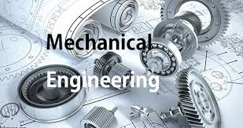

The Computer Science and Engineering department focuses on computer programming, software development, data structures, algorithms, and modern computing technologies. It provides strong technical and practical knowledge to students.

The AIML department deals with artificial intelligence, machine learning, deep learning, and intelligent systems. It prepares students for future technologies and research-oriented careers.
The Data Science department focuses on data analysis, big data, statistics, and data-driven decision making. Students learn how to extract useful information from large datasets.
The Civil Engineering department deals with planning, designing, construction, and maintenance of structures such as buildings, roads, bridges, and dams. It emphasizes practical and field-based learning.

The Mechanical Engineering department focuses on machines, manufacturing, thermodynamics, and mechanical systems. It provides strong core engineering knowledge and hands-on experience.